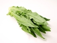

| 圖片 | 品種 | 蔬菜營養 | 價格(斤) | 數量 |
|---|---|---|---|---|
| 王菜 | 王菜含多種礦質元素如鈣、鉀、鐵、磷和各種維生素及胡蘿蔔素。 | $4 | ||
| 茼蒿 | 茼蒿含有豐富蛋白質、醣類、胡蘿蔔素、膳食纖維、鈣、磷、鐵、鉀、維生素A、B和C。 | $7 | ||
| 生菜 | 生菜含有豐富蛋白質、膳食纖維、鈣、鉀、磷、維生素A、維生素B和維生素C。 | $3 | ||
| 西洋菜 | 西洋菜含有豐富維生素A、C和D。 | $5 | ||
| 芥蘭 | 芥蘭含蛋白質、維他命A、B1、B2、C、礦物質以及食物纖維。 | $6 | ||
|  | 油麥菜 | 油麥菜含有豐富蛋白質、膳食纖維及多種維生素。 | $3 | |
| 青白菜 | 青白芯含多稻種維他命、礦物質和蛋白質。 | $3 | ||
| 菠菜 | 菠菜含有大量的β胡蘿蔔素及維他命A，也是維他命B6、鐵質、鈣質、鎂質和鉀質的極佳來源。 | $6 | ||
| 菜芯 | 菜芯含多種礦質元素如鈣、鉀、鐵、磷和各種維生素及胡蘿蔔素。 | $5 | ||
| 青椰 | 青椰菜含有葡萄芸苔素、酚類和蛋白質。 | $2 | ||
| 豆苗 | 豆苗含有葉綠素和多種維他命。 | $20 | ||
| 毛瓜 | 節瓜含有豐富維他命、礦物質、蛋白質、鹼和食物纖維。 | $7 | ||
| 青瓜 | 青瓜含有豐富維生素及礦物質。 | $5 | ||
| 番茄 | 番茄富含維生素C和B。 | $6 | ||
| 薯仔 | 含有蛋白質、礦物質(磷、鈣等)、維生素等多種成分，有「地下蘋果」之稱。 | $4 | ||
| 白蘿蔔 | 白蘿蔔含有豐富蛋白質、醣類、鈣、鐵、磷、維生素A和C。 | $2 | ||
| 紅蘿蔔 | 紅蘿蔔含有豐富維生素B2，促進發育，維持視力，也是皮膚及黏膜的必需營養素。 | $4 | ||
| 芋頭 | 芋頭含豐富澱粉和維他命。 | $8 | ||
| 西生菜 | 生菜含有豐富蛋白質、膳食纖維、鈣、鉀、磷、維生素A、維生素B和維生素C。 | $5 | ||
| 西蘭花 | 西蘭花也就是花椰菜中含有蛋白質、碳水化合物、脂肪、礦物質、維生素C和胡蘿蔔素等。此外，西蘭花中鈣、磷、鐵、鉀、鋅、錳等的含量都很豐富，它的礦物質成分比其他蔬菜更全面。 | $12 |
總計: